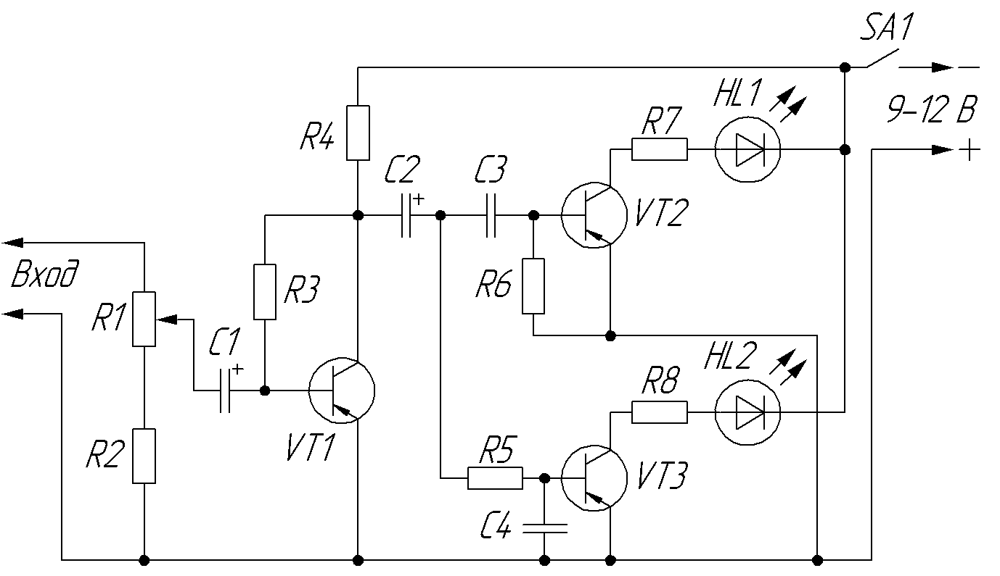
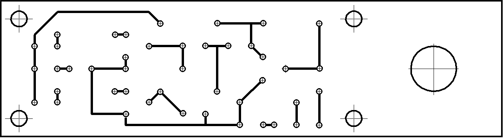
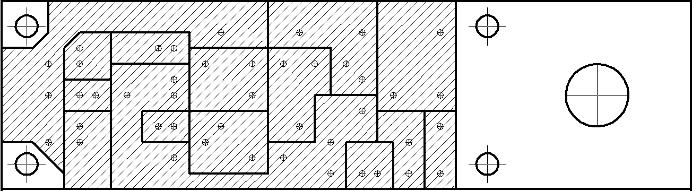
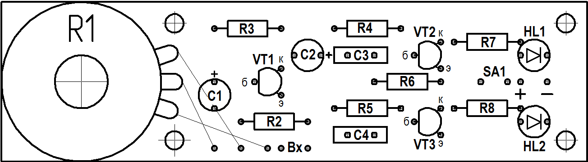

Двухканальная цветомузыкальная установка на светодиодах
Наличие предварительного усилителя позволяет подключить данное устройство к звуковому выходу телефона или компьютера.

Сигнал со входа, через делитель напряжения на резисторах R1 и R2 (рис. 1), поступает на предварительный усилитель. Усиленный сигнал подается на два частотных фильтра. Фильтр С1R4 пропускает высшие частоты, а фильтр R3C2 - низшие. Выделенные фильтрами сигналы поступают на усилительные каскады, нагрузками которых являются светодиоды. В канале высших частот стоит светодиод зеленого цвета свечения (HL1), а в канале низших частот - красного (HL2).
| Обозначение | Наименование | Номинал | Кол-во | Примечание |
|---|---|---|---|---|
| С1, С2 | Конденсатор электролитический | 10 мкФ, 16 В | 2 | |
| С3 | Конденсатор | 0,047 мкФ | 2 | |
| HL1 | Светодиод | АЛ307 | 1 | красного цвета свечения |
| HL2 | Светодиод | АЛ307 | 1 | зеленого цвета свечения |
| R1 | Резистор переменный | 100 кОм | 1 | |
| R2, R7, R8 | Резистор постоянный | 1 кОм-0,25 Вт | 3 | |
| R3 | Резистор постоянный | 47 кОм-0,25 Вт | 1 | |
| R4, R5 | Резистор постоянный | 10 кОм-0,25 Вт | 2 | |
| R6 | Резистор постоянный | 3 кОм | 1 | |
| SA1 | Выключатель | 1 | ||
| VT1-VT3 | Транзистор биполярный | КТ326 | 3 | типа n-p-n КТ3107, КТ209 |


а) с постоянной шириной проводников
б) с постоянной шириной зазоров

Данное устройство можно собрать на транзисторах структуры n-p-n (КТ315, КТ3102). В этом случае необходимо изменить на противоположные полярности источника питания, электролитических конденсаторов и светодиодов (рис. 4).